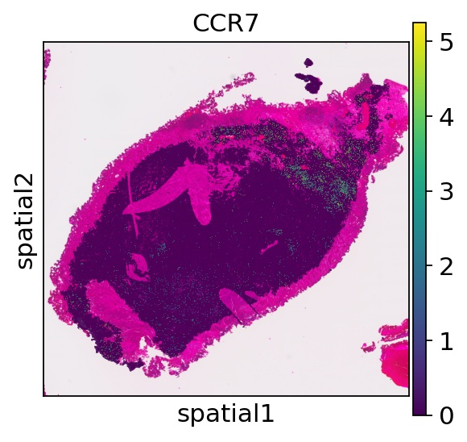

This page was generated from a Jupyter notebook. You can download the notebook
here to run it locally in Jupyter.
Run Thor on Visium HD data
In this notebook, we show how to infer cell-level spatial transcriptome based on a Visium HD dataset of a bladder cancer patient sample.
For installation of Thor, please refer to this installation guide.
Import the packages
[1]:
import sys
import os
import logging
import datetime
logger = logging.getLogger()
logger.setLevel(logging.INFO)
logging.basicConfig(format='%(name)s - %(levelname)s - %(message)s')
now = datetime.datetime.now()
logger.info(f"Current Time: {now}")
root - INFO - Current Time: 2025-02-07 16:02:05.951716
[2]:
%config InlineBackend.figure_format = 'retina'
import numpy as np
import pandas as pd
import scanpy as sc
import seaborn as sns
import matplotlib.pyplot as plt
sc.set_figure_params(scanpy=True, dpi=80, dpi_save=300)
sc.settings.verbosity = 'error'
from thor.pp import WholeSlideImage, Spatial
from thor.finest import fineST
from thor.pl import single_molecule, plot_spot,get_nuclei_pixels
from thor.utils import get_adata_layer_array
from PIL import Image
Image.MAX_IMAGE_PIXELS = None
numexpr.utils - INFO - Note: NumExpr detected 12 cores but "NUMEXPR_MAX_THREADS" not set, so enforcing safe limit of 8.
numexpr.utils - INFO - NumExpr defaulting to 8 threads.
Predicting cell-level gene expression using Markov graph diffusion
The segmentation part will be skip because it will take some time without GPU. We will provide pre-computed segmentation folder (include both feature and segmentation files)
[3]:
# name = "D1_Johnson"
# image_path = f"./{name}_Scan1.qptiff.tiff"
# wsi = WholeSlideImage(image_path, name=name)
# wsi.process(method="stardist")
# cell_mask_path = os.path.join(image_process_dir, "nuclei_mask.npz")
# wsi = WholeSlideImage(image_path, name=name, nuclei_seg_path=cell_mask_path, nuclei_seg_format='mask_array_npz')
# wsi.process()
Preprocessing cell-level spatial transcriptome.
Using the standard SCANPY pipeline, we created the VisiumHD 002um bin adata from the Space Ranger output directory (D1_Johnson). This adata contains the expression matrix, bin locations mapped as pixel coordinates on the whole slide image (WSI), and both high and low-resolution images with their associated scale factors.
[4]:
name = "D1_Johnson"
outdir = os.getcwd()
image_path = f"../{name}_Scan1.qptiff.tiff"
image_process_dir = os.path.join(outdir, f'WSI_{name}')
cell_mask_path = os.path.join(image_process_dir, "nuclei_mask.npz")
cell_feature_path = os.path.join(image_process_dir, "cell_features.csv")
spatial_dir = f"./{name}"
spot_adata_path = os.path.join(spatial_dir, f"{name}_processed_002um.h5ad")
[5]:
cell_feature = pd.read_csv(cell_feature_path,index_col=0)
spot = sc.read_h5ad(spot_adata_path)
We need to use a new function tailor to Visium HD 2 micrometer square bins data (less than cell size).
[6]:
from thor.utilities.VisiumHD_cell_mapping import HD2cell
adata_cell, assignments = HD2cell(adata_spot=spot, node_feat=cell_feature)
The shape of the transformed cellxspot is: (92514, 2482662)
[7]:
sample = fineST(
image_path,
name=name,
spot_adata_path=spot_adata_path,
cell_features_csv_path=cell_feature_path
)
sample.prepare_input(mapping_margin=10)
[02/07/25 15:37:06] INFO Thor: Please check alignment of cells and spots
INFO Thor: The first two columns in the node_feat DataFrame need to be consistent with the spatial coordinates from
obsm['spatial'].
[02/07/25 15:37:10] INFO Thor: Mapping cells to the closest spots within 10 x the spot radius
[8]:
sc.pp.normalize_total(adata_cell,target_sum=10000)
sc.pp.log1p(adata_cell)
[9]:
sample.adata.X = adata_cell.X
sample.adata.obs_names = adata_cell.obs_names
[10]:
sc.tl.pca(sample.adata)
[11]:
sample.genes = [
"VIM", # Vimentin
"ACTA2", # Alpha Smooth Muscle Actin (αSMA)
"CAV1", # Caveolin 1
"CAV2", # Caveolin 2
"PDGFRA", # Platelet Derived Growth Factor Receptor Alpha
"CD34", # CD34 Molecule
"GJA1", # Gap Junction Protein Alpha 1 (Connexin 43)
"KIT", # KIT Proto-Oncogene, Receptor Tyrosine Kinase
"CDH11", # Cadherin 11
"PDGFRB", # Platelet Derived Growth Factor Receptor Beta
"CSPG4", # Chondroitin Sulfate Proteoglycan 4 (NG2)
"PECAM1", # Platelet And Endothelial Cell Adhesion Molecule 1 (CD31)
"FAP", # Fibroblast Activation Protein Alpha
"TNC", # Tenascin C
"THY1", # Thy-1 Cell Surface Antigen (CD90)
"S100A4", # S100 Calcium Binding Protein A4 (FSP1)
"DLL4", # Delta Like Canonical Notch Ligand 4
"CCR7"
]
[12]:
sample.set_genes_for_prediction(genes_selection_key=None)
[13]:
sample.recipe = 'gene'
sample.set_params(
is_rawCount=False,
out_prefix="fineST",
write_freq=20,
n_iter=20,
conn_csr_matrix="force",
smoothing_scale=0.8,
node_features_obs_list=['spot_heterogeneity'],
n_neighbors=10,
geom_morph_ratio=0.5,
geom_constraint=0,
inflation_percentage=None,
regulate_expression_mean=False,
stochastic_expression_neighbors_level='spot',
smooth_predicted_expression_steps=0,
reduced_dimension_transcriptome_obsm_key="X_pca",
adjust_cell_network_by_transcriptome_scale=0,
n_jobs=20)
[14]:
sample.predict_gene_expression()
[02/07/25 15:39:58] INFO Thor: Using mode gene
INFO Thor: Forcing to recalculate the connectivities.
INFO Thor: Construct SNN with morphological features: ['mean_gray', 'std_gray', 'entropy_img', 'mean_r', 'mean_g', 'mean_b',
'std_r', 'std_g', 'std_b'].
[02/07/25 15:40:03] INFO Thor: Finish constructing SNN
INFO Thor: Add adata.obsp["snn_connectivities"]
INFO Thor: Add adata.obsp["knn_connectivities"]
INFO Thor: Add adata.uns["snn"]
INFO Thor: Weigh cells according to the spot heterogeneity.
[02/07/25 15:40:04] INFO Thor: Promote flow of information from more homogeneous cells to less.
[02/07/25 15:40:05] INFO Thor: Eliminate low quality edges (<0.1) between cells.
INFO Thor: Compute transition matrix
INFO Thor: self weight scale is set to: 0.200
[02/07/25 15:40:06] INFO Thor: Added transition matrix to adata.obsp["snn_transition_matrix"]
... storing 'spot_barcodes' as categorical
[02/07/25 15:40:08] INFO Thor: fineST estimation starts.
100%|██████████| 20/20 [00:07<00:00, 2.57it/s]
[02/07/25 15:41:41] INFO Thor: Saving gene expression matrices.
[02/07/25 15:41:50] INFO Thor: fineST estimation finished.
[15]:
ad_thor = sample.load_result('fineST_20.npz')
ad_thor
[15]:
AnnData object with n_obs × n_vars = 92514 × 18
obs: 'in_tissue', 'array_row', 'array_col', 'n_genes_by_counts', 'total_counts', 'total_counts_mt', 'pct_counts_mt', 'n_counts', 'spot_barcodes', 'x', 'y', 'mean_gray', 'std_gray', 'entropy_img', 'mean_r', 'mean_g', 'mean_b', 'std_r', 'std_g', 'std_b', 'seg_label', 'spot_heterogeneity', 'node_weights'
var: 'gene_ids', 'feature_types', 'genome', 'mt', 'n_cells_by_counts', 'mean_counts', 'pct_dropout_by_counts', 'total_counts', 'n_cells', 'used_for_prediction', 'used_for_reduced', 'used_for_vae'
uns: 'log1p', 'spatial', 'cell_image_props', 'pca', 'snn'
obsm: 'spatial', 'X_pca'
varm: 'PCs'
obsp: 'snn_connectivities', 'knn_connectivities', 'snn_distances', 'knn_distances', 'snn_transition_matrix'
[16]:
# save ad_thor
ad_thor.write(f"./{name}/{name}_finesST_20_result_002um.h5ad")
Compare gene expression profiles between the Thor results with VisiumHD 008μm data (close to the actual cell size).
[17]:
ad_HD = sc.read_h5ad(f"./{name}/{name}_processed_008um.h5ad")
[18]:
sc.pl.spatial(ad_thor,color="CCR7", spot_size=50)
[19]:
sc.pl.spatial(ad_HD,color="CCR7", spot_size=50)

[ ]: